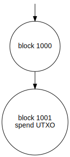
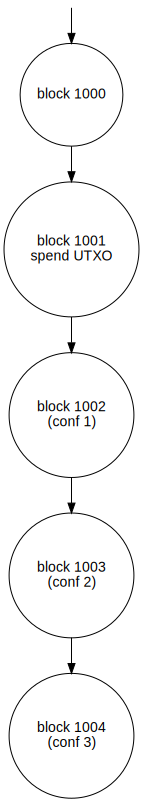
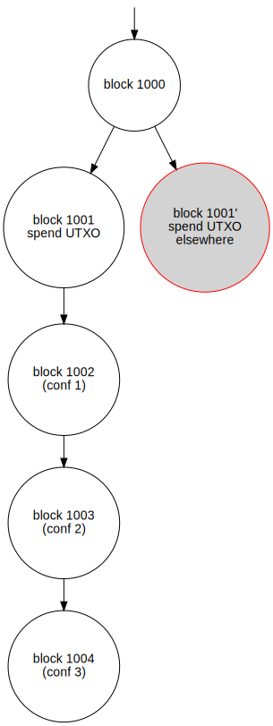

# CS 4501 ### Cryptocurrency <p class='titlep'> </p> <div class="titlesmall"><p> <a href="http://www.cs.virginia.edu/~asb">Aaron Bloomfield</a> (aaron@virginia.edu)<br> <a href="http://github.com/aaronbloomfield/ccc">@github</a> | <a href="index.html">↑</a> | <a href="./03-numbers.html?print-pdf"><img class="print" width="20" src="../slides/images/print-icon.png" style="top:0px;vertical-align:middle"></a> </p></div> <p class='titlep'> </p> ## Mining
# Contents [Mining difficulty](#/difficulty) [Environmental issues](#/environment) [Proof-of-$X$](#/proofofx) [DAGs](#/dags) [Forks & Orphan Nodes](#/forks) [Attacks](#/attacks)
# Mining difficulty <img src="../slides/images/logos/btc-coin-symbol.svg" class="cclogosubtitle"> <img src="../slides/images/logos/eth-coin-symbol.svg" class="cclogosubtitle"> <img src="../slides/images/logos/rvn-coin-symbol.svg" class="cclogosubtitle">
## Disclaimer - All the numbers shown here were accurate and current as of the time this slide set was updated - September 13, 2022 <!-- change each semester --> - Specifically, before Ethereum went to PoS (and all their hash power went elsewhere) - But they are likely all different now - However, they are (generally) consistent throughout the slide set - And the exact numbers don't matter as much to explain the concepts <!-- .slide: class="cclogo-slide" --> ## Coins we'll study - [](https://coinmarketcap.com/currencies/bitcoin/) Bitcoin: we all know this <br clear='all'> - Hash algorithm: double SHA-256 - [](https://coinmarketcap.com/currencies/ravencoin/) Ravencoin <br clear='all'> - A fork of Bitcoin, so works similarily; focuses on tokens - Designed to be ASIC resistant - Hash algorithm: kawpow (16 different rotating algorithms) - [](https://coinmarketcap.com/currencies/ethereum/) Ethereum <br clear='all'> - A generational improvement over Bitcoin - Allows for much more complicated programs - Hash algorithm: Keccak-256 (aka SHA3) - It just moved to proof-of-stake ## Why a higher difficulty? - As more people mine -- to get the reward -- the time between blocks decreases - Each coin is designed to have a fixed time between blocks - Bitcoin: 10 minutes; Ravencoin: 1 minute; Ethereum: (previously) 12-15 seconds - Mining too fast will exhaust the available coin and and devalue the coin's value ## How to make it more difficult - Force the hash of the mined block to have a certain number of leading zeros - In [Ravencoin block 2,150,108](https://rvnblockexplorer.com/block/2150108): 000000000000e1c48b 11f28eaf2cc6e60d345aa4b3cfe12747c0821ff14f6279 - 12 leading hex zeros, 48 leading bits - In [Bitcoin block 753,940](https://bitcoinblockexplorers.com/block/753940): 000000000000000000 055edf99acd7c1ec25b4020994e865eccd0f00cbcc5662 <!-- change each semester --> - 19 leading hex zeros, 77 leading bits ## Random nonces - Consider a random nonce to generate a hash value - You would expect that half (50%) would have a leading 0 bit, and the other half would have a leading 1 bit - Expectation is that 1/4 (25%) have two leading 0 bits - Expectation is that 1/8 (12.5%) have three leading 0 bits - Expectation is that $\frac{1}{2}^n$ have $n$ leading 0 bits - Thus... <ul> <li class='fragment'> RVN example: $\frac{1}{2^{48}}$, which is 1 in 281 trillion ($2.81 \ast 10^{12}$), would have 48 leading 0 bits </li> <li class='fragment'> BTC example: $\frac{1}{2^{77}}$, which is 1 in 151 sextillion ($151 \ast 10^{21}$), would have 77 leading 0 bits </li> </ul> <!-- .slide: class="right-float-img" --> ## Bitcoin nonces <a href='https://twitter.com/100trillionUSD/status/1081217034485149697'><img src='images/mining/nonce-tweet.webp' style="width:40%;border-radius:10px"></a> - Consider [The Mystery Of The Bitcoin Nonce Pattern](https://blog.bitmex.com/the-mystery-of-the-bitcoin-nonce-pattern/) - And the [full image](images/mining/nonce-tweet-graph.webp) ([remote](https://pbs.twimg.com/media/DwFAIi8WoAAyUwq?format=jpg&name=large)) - Early blocks (left-most) were Satoshi experimenting - Possible reasons: - Selection bias ([source](https://bitcoin.stackexchange.com/questions/36860/bitcoin-and-other-crypto-coins-nonce-loop)) - How ASICs work ([source](https://blog.bitmex.com/the-mystery-of-the-bitcoin-nonce-pattern/)) ## Is that BTC number correct? - [This site](https://www.blockchain.com/charts/hash-rate) estimates that the current world-wide BTC hash rate is 232 million Th/s <!-- change each semester --> - Or $232 * 10^{18}$ h/s $= 2.32 * 10^{20}$ h/s $= 232$ Eh/s - A 10 minute BTC block takes 600 seconds - Or about $140$ Zh $= 1.4 * 10^{23}$ h - We computed needing 151 Zh (zetta hashes) - That's close enough for government work! - The differences were caused by: - A decreasing block time caused by more miners; the difficulty will adjust in a week or so - The numbers being used coming from different sites and slightly different points in time ## Computing network hash rate - We can compute this the other way - Consider a Bitcoin that requires 77 leading zero bits (from earlier) - So we have a 1 in $2^{77}$ or 1 in $151*10^{21}$ chance to get a hash - Rephrased: we would expect to get valid nonce after $151*10^{21}$ hashes (or 151 Zh) - Bitcoin is designed to have 10 minutes per block (600s) - Dividing one by the other yields 251 Eh/s - Again, close enough for an estimate, as it's actually 232 Zh <!-- change each semester --> - This can be done with any coin when you know the difficulty and block rate ## When will you get a RVN block? - Assume that your graphics card's GPU can compute about 50 Mh/s for kawpow (RVN) ([source](https://2cryptocalc.com/gpu/24h/3090/1)) - That's a *very* fast graphics card (Nvidia 3090) - We expect to get a block after $281 * 10^{12}$ hashes (or 281 Th) - A 50 Mh/s graphics card will compute 281 Th in about 63 days - Reward is 2,500 RVN times 7¢ per RVN = $175 - Or `$`2.78 per day, on average - Minus electrical costs of about 85¢ per day yields about a `$`1.93 / day profit ## When will you get a BTC block with a GPU? - Assume that your graphics card's GPU can compute about 9,700 Mh/s for SHA-256 (BTC) ([source](https://gist.github.com/Chick3nman/e4fcee00cb6d82874dace72106d73fef)) - Again, that's a *very* fast graphics card (Nvidia 3090) - We expect to get a block after $151 \ast 10^{21}$ hashes (or 151 Zh) <!-- change each semester --> - A 9,700 Mh/s graphics card will compute 151 Zh in about 180,173,730 days (493,288 years!) - Reward is 6.25 BTC times `$`22,000 per BTC - Which is `$`137,500 per mined block - Or `$`0.28 per *year*, on average - Minus electrical costs of about `$`1 per day... ## When will you get a BTC block with an ASIC? - Consider the [Avalon 1166 miner](https://canaan.io/product/a1166pro-s-75t), as one example, that can compute $75$ Th/s $= 75 * 10^{12}$ h/s - We expect to get a block after $151 * 10^{21}$ hashes (or 151 Zh) <!-- change each semester --> - A 75 Th/s ASIC will compute 151 Zh in about 23,302 days (63 years) - Reward is 6.25 BTC times `$`22,000 per BTC - Which is `$`137,500 per mined block - Or about `$`2,182 (0.10 BTC) per *year* - Minus electrical costs... ## Is an ASIC miner worth it? - Again, consider the [Avalon 1166 miner](https://canaan.io/product/a1166pro-s-75t) - It generates about `$`2,182 per year, and uses 3,420 W of electricity <!-- change each semester --> - That's 82 kWh / day - At 11.04¢ per kWh, that's about $9 per day - Or about $270 per month - Or about $3,300 per year, on average - So the profit is a loss of `$`1,100 per year - Unless you use somebody else's electricity... - At a cost of about $4.5k, it will pay itself off in about 2 years - But ONLY IF you don't pay for the electricity ## Is an ASIC miner worth it? - It will generate a money UNLESS... - You have to actually pay for the electricity - The overall hash rate goes up significantly - That miner is then producing a lower percentage of the overall hash rate - And everybody and their siblings are getting into mining these days... - The price of BTC goes down - The miner doesn't actually produce the stated hash rate - The miner breaks -- how will you get it fixed? - If the price of BTC goes up a lot... - ...and the hash rate doesn't increase as rapidly - Then it might make a profit with electrical costs ## Is CPU mining worth it for Bitcoin? - Assume that your CPU can compute about 65 K hashes per second ([source](https://stackoverflow.com/questions/4764026/how-many-sha256-hashes-can-a-modern-computer-compute)) - That's 65 *K* hashes or about 65,000 hashes - We expect to get a block after $120 * 10^{21}$ hashes (or 151 Zh) <!-- change each semester --> - A 65 K CPU will compute 151 Zh in about 26 *trillion* days - That's 74 *billion* years - You still have to factor in electrical costs! - And even if this is off by a factor of 1,000, it's still way to slow ## Mining: nbits - The nbits field is a 8-digit (32-bit) hex number, such as: 0x1b00a908 - It's like an enocded floating point number - The first 2 digits (1b) is the *exponent*; convert to decimal and subtract 3 - $0x1b -3 = 27-3=24$ - This means there will be <span class="skyblue">24 *trailing* 0x00 bytes</span> (48 zero hex digits) - The last 6 digits of the nbits are the <span class="lightgreen">*mantissa:* 0x00a908</span> - We left-fill with 0's to 256 bits (64 hex digits) - With 48 trailing zero digits and 6 exponent digits, that leaves us <span class="pink">10 leading 0x0 hex digits</span> (5 0x00 bytes) - This gets us: 0x<span class="pink">0000000000</span><span class="lightgreen">00a908</span><span class="skyblue">00000000000000000 0000000000000000000000000000000</span> ## Mining: nbits & target - An nbits field of 0x1b00a908 thus gets us a *target* of 0x000000000000a908000000000000000 000000000000000000000000000000000 - This is from [RVN block 1,982,364](https://rvnblockexplorer.com/block/1982364) - The hash value had to be less than that - That target requires 12 leading zero hex digits (48 leading binary zero bits) - Chance to find: $\approx 1/2^{48}$ - The first RVN target ([RVN block 1](https://rvnblockexplorer.com/block/1)) was 0x1d00ffff = 0x00000000ffff00000000000000000000 00000000000000000000000000000000 - Chance to find: 1 in $2^{32}$ or 1 in 4.3 billion - Note that some incorrectly report it as 0x1e00fff ## Mining: targets & difficulty - If you divide the current target by the original target, you get the difficulty - How many times harder the current block is than the original block - For [RVN block 1,982,364](https://rvnblockexplorer.com/block/1982364), that's about 99,253.60 - To avoid confusion, I will refer to this as *network difficulty* - You can see the current [RVN network difficulty](https://www.coinwarz.com/mining/ravencoin/difficulty-chart) - And also the current [BTC network difficulty](https://www.coinwarz.com/mining/bitcoin/difficulty-chart) - [This page at the Bitcoin wiki](https://en.bitcoin.it/wiki/Difficulty) describes difficulty computation in more detail (and provides C++ code) ## Miner reported difficulty - Another way to look at it: - Let $d_n$ be the network difficulty (say, 100k) - Let $d_o$ be the original difficulty of block 1 ($2^{32}=4.29G$) - The current target is as hard as the product of those two: $t = d_n * d_o$ - For [RVN block 1,982,364](https://rvnblockexplorer.com/block/1982364), the network difficulty was 100.3417k - (RVN historical difficulty can be found [here](https://www.coinwarz.com/mining/ravencoin/difficulty-chart)) - Making the target as hard as $100k * 4.3G = 4.29T$ ## bdiff versus pdiff - The first RVN & BTC target was 0x1d00ffff = 0x00000000ffff0000000000000000000000 000000000000000000000000000000 - This is the exact expansion of the *nbits* value - That yields a difficulty of 99,253.59955 - This is *bdiff* (think: bitcoin-diff) - Traditionally it was represented as a target of 0x00000000ffffffffffffffffffffffffffffffffffffffffffffffffffffffff - This is a "non-truncated target", and usually the values used by mining pools - That yields a difficulty of 99,255.11406 - This is *pdiff* (think: pool-diff) ## Mining pools - The chance of you getting a Bitcoin block is really low - But if you team up with other people, you can all contribute, and if the group gets a block the reward is distributed among the members - This is a *mining pool* - For Proof-of-Work (PoW) coins, members get a percentage of the value of the pooled profit based on the amount of work they put in - But how to compute that? - More on that in a bit... ## Miner reported difficulty - A mining program will report the difficulty of a *share* - For now, a *share* is a nonce found that has a lot of leading 0's, even if it is not enough to solve the block - "134.25 T", for example - I'll refer to this as the *share difficulty*, or $d_s$, to avoid confusion - Share difficulty is set by the mining pool - If a share requires 42 leading zero bits, then it would report a share difficulty of $2^{42} = 4.4$ T - 44 leading zero bits yields a share difficulty of $17.6$ T - The target for [RVN block 1,982,364](https://rvnblockexplorer.com/block/1982364) needed 48 leading zero bits - $s_d=2^{48} = 281.5$ T <!-- ## Miner reported difficulty - Given *nbits* of 0x1b00a908 for [RVN block 1,982,364](https://rvnblockexplorer.com/block/1982364), we can compute $b$, the exact number of zero bits needed, via: - Let $m$ be the (base-10) value of the mantissa - $m=0x00a908=43,272$ - Let $p$ be the number of hex bytes (not digits) from the power part of *nbits*; this is the power value - $p=0x1b-3=27-3=24$ - Let $l_h$ be the leading number of 0 hex digits (not bytes) in the target - $l_h=64-6-2*p=10$ - The exact number of zero bits, $b$, needed is then: - $b=4*l_h+24-log2(m) = 48.59885$ - The minimum required share difficulty, $sd$, is then 2 to that power: $sd=2^b=2^{48.59885} = 426.30$ T --> ## Mining shares - Any *good* nonce is reported to the mining pool, even if it is not enough to solve the block - Consider the [2miners RVN mining pool](https://rvn.2miners.com/), which has *pdiff* (pool mining difficulty) of 4.295 G - So any nonce found that has a difficulty of $4.295$ G$ = 4.295 * 10^9$ or higher will be reported to the mining pool - It is thus expected to take $4.295G = 2^{32}$ hashes to get a share - So a 50 Mh/s GPU (the Nvidia 3090) would expect to get a share every 85.9 seconds - The share value keeps the bandwidth to the mining pool down while also allowing an estimate of the work performed <!-- ## Miner reported difficulty - The nonce found for [RVN block 1,982,364](https://rvnblockexplorer.com/block/1982364) generated a hash of 0x0000000000003d7678380e2f25b4a8c 8271b53638d380f761acbf4ee040f325a; what was its share difficulty? - Let $l_b$ be the leading number of binary bits in the hash (note that $l_h = l_b*4$): - $l_b = 256 - log_2(hash) = 50.05835$ - The difficulty with $l_b$ bits is just - $2^{l_b} = 2^{50.05835} = 1.1724*10^{15} = 1,172.4$ T - But the number reported by the mining software was $541.1$ T, so something is off here... -->
# Environmental Issues
## How much is mining killing the Earth? - Again, consider the [Avalon 1166 miner](https://canaan.io/product/a1166pro-s-75t) - It uses 3,420 W and produces 75 Th/s - That's 21.9 Gh/W, which is pretty efficient (relatively speaking) - 3,420 W for 24 hours/day yields 82.08 kWh - At Charlottesville's electric rates (11.04¢ per kWh) that's $9.06 per day - [This site](https://www.blockchain.com/charts/hash-rate) estimates that the current world-wide BTC hash rate is 200 million Th/s (200 Eh/s) - If it were only Avalon 1166 miners, then we need 2,666,666 such miners, at 75 Th/s, to get 200 million Th/s - That's 9.2 GW ($10^{12}$W), or 219 GWh per day, or about 80,000 GWh (80 TWh) per year <!-- .slide: class="right-float-img" --> ## Death to the Environment! <img src="https://upload.wikimedia.org/wikipedia/commons/a/aa/AlfedPalmersmokestacks.jpg" style="padding:0"> - The lower-bound estimate from the last slide is that BTC mining uses 9.2 GW ($10^{12}$W), or 219 GWh per day, or 80 TWh per year - A [2019 estimate](https://www.sciencedirect.com/science/article/pii/S2542435119302557) was at 46 TWh per year, but the [hash rate](https://www.blockchain.com/charts/hash-rate?timespan=all) has tripled since then - That is more than 171 of the world's 218 countries ([source](https://en.wikipedia.org/wiki/List_of_countries_by_electricity_consumption)) - That is the equivalent to 2% of the total US electrical usage per year ([source](https://en.wikipedia.org/wiki/List_of_countries_by_electricity_consumption)) ## Death to the Environment! - These computations: - Assume that all the BTC mining is as efficient as the Avalon 1166 miner - To little efficiency and money is lost, not gained - Do not factor in the other mined coins - So perhaps the actual amount is twice our initial estimate? - That is the equivalent to 4% of the total US electrical usage per year ([source](https://en.wikipedia.org/wiki/List_of_countries_by_electricity_consumption)) - That's 160 TWh per year - But that's a total guess, though! ## Worldwide power consumption - In 2019, the world used 23,398 TWh of electricity ([source](https://en.wikipedia.org/wiki/List_of_countries_by_electricity_consumption)) - The US used 3,990 TWh (17.1% of total) - Only China was higher at 8,313 TWh (35.5% of total) - We guessed that cryptocurrency mining uses 160 TWh per year - That is 0.7% of the worldwide total energy usage - 0.35% for Bitcoin only ## Actual usage - Consider: [Bitcoin Mining Carbon Emissions at 'Inconsequential' Levels: CoinShares](https://decrypt.co/91824/bitcoin-mining-carbon-emissions-inconsequential-levels-coinshares) - They estimate that bitcoin mining uses 0.08% of worldwide electricity - Take that with a grain of salt, though! - A cryptocurrency company, that makes money off of mining, saying it's fine for the environment is like a cigarette company saying smoking is not unhealthy <!-- .slide: class="right-float-img" --> ## BTC mining in the US  - [Texas is the go-to place to mine BTC](https://www.washingtonpost.com/technology/2021/07/08/bitcoin-mining-texas-electricity/) - Cheap energy and a business-friendly environment - The miners [turn off the mining when demand spikes](https://www.washingtonpost.com/climate-solutions/2022/07/15/bitcoin-crypto-texas-heat-wave/) - And they [*get paid to do so*](https://finance.yahoo.com/news/texas-bitcoin-miners-getting-paid-064946406.html) ([original source](https://fortune.com/2022/07/12/texas-bitcoin-miners-paid-shut-down-power-grid-electricity-blackout-heat/)) <!-- - The cost of this is pushed off to consumers in other ways: [low social services](https://finance.yahoo.com/news/10-states-spend-most-least-090000541.html) (6th worst), [low quality of life](https://www.worldatlas.com/articles/the-10-us-states-with-the-worst-quality-of-life.html) (5th worst), [highest overall taxes](https://worldpopulationreview.com/state-rankings/highest-taxed-states) (7th worst), etc. -->
# Proof-of-$X$ <img src="../slides/images/logos/eth-coin-symbol.svg" class="cclogosubtitle"> <img src="../slides/images/logos/fil-coin-symbol.svg" class="cclogosubtitle"> <img src="../slides/images/logos/neox-coin-symbol.svg" class="cclogosubtitle"> <img src="../slides/images/logos/ppc-coin-symbol.svg" class="cclogosubtitle"> <img src="../slides/images/logos/rvn-coin-symbol.svg" class="cclogosubtitle"> <img src="../slides/images/logos/sol-coin-symbol.svg" class="cclogosubtitle"> <img src="../slides/images/logos/storj-coin-symbol.svg" class="cclogosubtitle"> <img src="../slides/images/logos/xlm-coin-symbol.svg" class="cclogosubtitle"> <img src="../slides/images/logos/xpm-coin-symbol.svg" class="cclogosubtitle">
## Mining - In order for transactions to occur, there has to be a way for some entity to "certify" a block - So far the only certification method we've seen is proof-of-work mining - But how to decide who gets to do it? - Since there is a reward involved, everybody wants to be that one entity! ## Proof of Work (PoW) - This is what we've seen so far: - Find a nonce (and transaction order) to get the hash less than the target - The successful miner has shown s/he has done the work... - ... or just been lucky enough... - ... to "complete" the block ## Proof of Work (PoW) issues - High energy usage - Environmental issues as a result - It's not a "green" solution by any means - Can cause bottlenecks when there is a lot of activity - Not (currently) a problem for Bitcoin - It was before witnesses were added, though - Bit it's a problem for "things" that runs on top of Ethereum <!-- .slide: class="cclogo-slide" --> ## "Useful" Proof-of-Work (PoW) - Use computing power for some "good" - [](https://coinmarketcap.com/currencies/primecoin/) Example: Primecoin, launched in 2013 <br clear='all'> - Purpose: generate primes for mathematical and scientific study - [Whitepaper](https://primecoin.io/bin/primecoin-paper.pdf) - Time between blocks: 1 minute - Difficulty change is for each block (not 2 weeks) - Generates two types of primes sequences: Cunningham chains and Bi-twin chains ## Cunningham chain - Of the first kind: length $n$ sequence $(p_1, \ldots, p_n)$ such that: $p_{i+1} = 2p_i+1$ - Each prime is one *more* than twice the previous - Example: 2, 5, 11, 23, 47 - Of the second kind: length $n$ sequence $(p_1, \ldots, p_n)$ such that: $p_{i+1} = 2p_i-1$ - Each prime is one *less* than twice the previous - Example: 19, 37, 73 - Generalized: length $n$ sequence $(p_1, \ldots, p_n)$ such that: $p_{i+1} = a \ast p_i + b$ ## Bi-twin chain - A sequence of primes of the form: - $n-1,n+1,2n-1,2n+1,\ldots,2^kn-1,2^kn+1$ - Must have an even number of terms - All examples are really large numbers... <!-- .slide: class="right-float-img" --> ## ASIC mining <img src="https://canaan.io/wp-content/uploads/2020/08/481e0bea4c81e2d568cf6ae91505937c.png" style="padding-left:0;padding-right:0"> - Some cryptocurrencies use hash algorithms that special-purpose hardware can mine - ASIC = application-specific integrated circuit - Bitcoin, Ethereum (before the ETH2 upgrade) <!-- .slide: class="cclogo-slide" --> ## ASIC-resistant mining - [](https://coinmarketcap.com/currencies/ravencoin/) Consider Ravencoin, which aims for ASIC-resistant mining <br clear='all'> - It uses 16 different hash algorithms - The last 8 bytes of the previous block's hash determine which 8 algorithms to use - That's a *LOT* of hashes, and it is very power-intensive - Many are skeptical of it's ASIC-resistance - If it were valuable enough, I'm sure somebody would develop an ASIC for it - The developers regularly update the algorithm to try to maintain ASIC-resistance - Original algorithm was [x16r](https://ravencoin.org/assets/documents/X16R-Whitepaper.pdf), then x16rv2, and now kawpow ## Lite Hash Rate (LHR) - Nvidia makes graphics card GPUs - And everybody was buying their cards to mine cryptocurrency - Which priced out their primary market: gamers - Nvidia's solution: create LHR cards - Make the card recognize mining of Ethash, and "lock" the GPU for 20 seconds - But this only affects Ethash, not any other mining algorithm! - Mining programs figured out how to *dual-mine* - It mines Ethash at half GPU usage and another coin for the other half - Nvidia gave up on this in May 2022 and removed LHR in recent drivers ## Terminology - The act of *certifying* a block is called different terms with different certification mechanisms - Technically *mining* is certification on a proof-of-work blockchain - But, more generally, it encompasses any type of block certification - Other terms: signing, validating, etc. ## Proof of Authority (PoA) - A small set (possibly singleton) of accounts are *signers* - They form a *clique* - One signer signs a block - Then a majority (>50%) of the clique must agree - Not great for a decentralized cryptocurrency! - Our course blockchain uses this - The clique was defined in the genesis.json file - It makes mining (aka signing) much easier in a development setting - Biggest uses: test networks, development environments, course blockchains ## Proof of Stake (PoS) - Those with a *stake* in the cryptocurrency... - ... meaning they hold enough of it... - Can be the ones to present a certified block to the network - They put their cryptocurrency "on the line" to vouch for the validity of the block - And they get the miner reward - But what if the block is invalid? - Then the certifier loses some of their cryptocurrency - Called "slashing" - While not unknown, it rarely happens - Those who can certify blocks are called *validators* ## Proof of Stake (PoS) - The network chooses the validators based on: - Amount of currency held - Length of currency held - Implementations vary by cryptocurrency - There is a way that those with less "stake" will be able to be the validators less often - Coins that use this: Tezos, Cosmos, Peercoin, Tendermint, the ETH2 upgrade - ETH2 requires a minimum of 32 ETH to participate in PoS <!-- .slide: class="cclogo-slide" --> ## [](https://coinmarketcap.com/currencies/ethereum/) Ethereum and PoS - Originally Ethereum was proof-of-work (hash algorithm: Ethash) - It had a [difficulty bomb](https://docs.ethhub.io/questions-about-ethereum/what-is-the-difficulty-bomb/), aka "Ice Age" - At certain block numbers, the difficulty increases significantly - See [this graph](https://i.imgur.com/ac1xV3l.png) from the above link - Purpose: to force the developers to either: - Migrate it to a later date (as has happened so far) - Change to PoS (in the works for some time now) - The new Ethereum PoS proposal is called ETH2 - Or the Paris Network Upgrade or the Casper protocol - It went live on September 15, 2022 <!-- .slide: class="cclogo-slide" --> ## [](https://coinmarketcap.com/currencies/ethereum/) Ethereum's move to PoS - Phase 0: December 2020: create the "Beacon Chain", a PoS blockchain - Phase 1: September 15, 2022: change Ethereum from PoW to PoS - Last PoW block: [15,537,393](https://etherscan.io/block/15537393) - First PoS block: [15,537,394](https://etherscan.io/block/15537394) - Phase 2: sometime in 2023: allow shards - We'll see [sharding in the scalability slide set](scalability.html#/sharding) <!-- .slide: class="cclogo-slide" --> ## [](https://coinmarketcap.com/currencies/peercoin/) Peercoin - First implementation of PoS, from 2012 - [Whitepaper](https://whitepaper.io/document/139/peercoin-whitepaper), [source code on github](https://github.com/peercoin/peercoin) - Consider *coin age*, measured in *coin-days* - 90 coins held for 10 days is 900 coin-days - Mining a block consumes the coin-days - Thus, those with a lower number of coins will eventually be able to mine a block <!-- .slide: class="cclogo-slide" --> ## [](https://coinmarketcap.com/currencies/peercoin/) Peercoin - Weakness: buy a lot of Peercoin, and wait a long time - You can then mine many successive blocks, using a portion of your coin age each time - Then execute a [51% attack](bitcoin.html#/attacks) - Solution: *checkpoints* - Basically a periodic (few times per day) proof-of-work mined block - The nodes all agree on the "offical" blockchain, which then is immutable ## Nothing-at-stake-problem - Consider a fork in the blockchain due to two simultaneously mined blocks - This will happen occasionally! - Which one chain should a validator mine for? - Ideal strategy: mine both - In PoS, it is not computationally demanding to mine both - This way you don't mine the eventual "wrong" chain, and then not get the reward - With PoS, there is nothing at stake to prevent mining both chains - This can make double-spend attacks more feasible, as duplicate chains are not removed quickly ## Nothing-at-stake problem - All coins must address this somehow - ETH2: - Part of your stake is a "deposit" on the validity of the block - If that block does not make it into the full block chain, you lose that deposit ## Staking - Let's say you wanted to be a validator for a PoS coin - If you had more of that coin... - ... you could be "chosen" as the validator more often - ... and thus get more of the validator reward - So you might "rent" coins from others to increase your balance ## Staking - If you have some of a coin, you could "loan" it to others so they can better participate in PoS - This is called "staking" - Advantages: - You get a payout: maybe 5% of your "loan" per year - Disadvantages: - You can't get your "stake" back early - A good choice if you definitely are not going to sell in the near future ## Staking Legality - On Feb 3, 2022, the IRS said it will not tax unsold, staked crypto ([source](https://www.forbes.com/sites/kamranrosen/2022/02/02/in-huge-precedent-irs-says-it-will-not-tax-unsold-staked-crypto/?sh=135dbc5f464c)) - You still pay when you sell it, of course - Such coins are "new property" not "income" - Once sold, presumably you would pay taxes on it similar to how you pay taxes on interest - But that was not mentioned in that article... <!-- .slide: class="cclogo-slide" --> ## Proof-of-History - In  Solana ([SOL](https://coinmarketcap.com/currencies/solana/)) the block verification combines PoS and proof of history ([Solana's whitepaper](https://solana.com/solana-whitepaper.pdf)) - Each transaction has a hash of *another* transaction - This proves that the TXN happened after the "other" transaction - This forms a chain (graph, really) of events in time - The blocks (maybe TXNs?) also have an actual timestamp - This graph is: - Directed (any TXN points to a previous TXN) - Acyclic (you can't have a loop in time) - Thus, the validator can always find the topological sort of a set of TXNs - Which means we can sequence them in the signed block <!-- .slide: class="cclogo-slide" --> ## PoH and block verification - With  Bitcoin, we have to compute the Merkle tree hash - Given $n$ transactions, it takes $\Theta(n)$ steps to build the tree - Given infinite computing power, it takes $\Theta(\log n)$ steps - In  Solana, each transaction can be verified in parallel - Just check that it goes one link back to another valid TXN - Given $n$ transactions and an infinite computing power, it can be done in $\Theta(1)$ time - A GPU can have 4,000 cores, and each can verify one TXN in parallel - Okay, not infinite, but still quite fast <!-- .slide: class="cclogo-slide" --> ## Proof-of-Capacity - aka Proof-of-replication (PoRep), proof-of-storage, etc. - You allocate a certain amount of "capacity" to store the blockchain - Depending on amount, you are likely not holding all of the blockchain - But all parts of the blockchain are on many machines - Benefit: in the case of a failure, the "storage" -- in the blockchain -- is replicated - You pay to store data in the blockchain - [](https://coinmarketcap.com/currencies/storj/) Example: Storj <!-- .slide: class="cclogo-slide" --> ## Proof-of-spacetime - Spacetime means allocating space over a period of time - And is not related to Einstein's spacetime from relativity - Like proof-of-capacity, but... - Your reward is based on the amount of space dedicated times the amount of time - [](https://coinmarketcap.com/currencies/filecoin/) Example: Filecoin <!-- .slide: class="cclogo-slide" --> ## [](https://coinmarketcap.com/currencies/neoxa/) Neoxa: Proof-of-Game - [Neoxa's whitepaper](https://www.neoxa.net/whitepaper) - Intent is to reward video game players for actions taken in the game itself - See the table on [whitepaper page 3](https://www.neoxa.net/whitepaper) - Pro: trying to get in early on the intersection of games and cryptocurrency - Cons: so many to list here, where to start? <!-- .slide: class="cclogo-slide" --> ## "Green" coins - Generally, any coin that is not proof-of-work - Possibilities: - Proof-of-stake, like ETH2 and Peercoin - Proof-of-{capacity, replication, spacetime}, like Storj and Filecoin - Does not require proofs, such as [](https://coinmarketcap.com/currencies/stellar/) Stellar Lumens (XLM) - There were also some pro-environment coins - That gave rewards for, say, producing renewable energy - No business model, so most have floundered
# DAGs
## Consider... - The first few blocks of an arbitrary cryptocurrency... - Here is the genesis block: ## The first block mined <img src="images/mining/dag/dag.dot.2.svg"> Block 0 is on the top, block 1 is on the bottom ## Two blocks mined We've just mined block 2 ## A transaction <img src="images/mining/dag/dag.dot.4.svg"> <img src="images/mining/dag/dag.dot.5.svg"> <img src="images/mining/dag/dag.dot.6.svg"> Note that UTXOs are not only in the bottom level <img src="images/mining/dag/dag.dot.7.svg"> <img src="images/mining/dag/dag.dot.8.svg"> <img src="images/mining/dag/dag.dot.9.svg" class="stretch"> <img src="images/mining/dag/dag.dot.11.svg" class="stretch"> <img src="images/mining/dag/dag.dot.13.svg" class="stretch"> <img src="images/mining/dag/dag.dot.15.svg" class="stretch"> <img src="images/mining/dag/dag.dot.16.svg" class="stretch"> <img src="images/mining/dag/dag.dot.17.svg" class="stretch"> <img src="images/mining/dag/dag.dot.18.svg" class="stretch">
## Realism - Most (all?) cryptocurrencies are mined by the developers for the first many blocks - Ethereum's first non-mining transaction was in block [46,147](https://etherscan.io/block/46147) - Bitcoin only had a few hundred accounts in the first 50,000 (or so) blocks - But the previous images of the DAG still show the concepts of having many transactions ## DAGs - The entire transaction list is a directed acyclic graph - aka DAG - In order to successfully mine, this has to be kept in memory - as that tells you if a UTXO has already been spent or not - Optimization: use hash tables (or similar) - Map a UTXO to the amount it makes available - And only keep track of the unspent UTXOs - So not *really* a DAG, then... ## DAG size - You can see DAG sizes at https://minerstat.com/dag-size-calculator - Ethereum's is over 5 Gb (as of Sep 2022) <!-- change each semester --> - This means that graphics cards with less than 4 Gb cannot mine (sign, certify, whatever) ETH - Consider Ravencoin, whose DAG is currently at 3.5 Gb (as of Sep 2022) - Based on the expected DAG growth... - 4 Gb GPUS will no longer be able to mine it around July 2023 - 6 Gb GPUS will no longer be able to mine it around Mar 2027 - [source](https://minerstat.com/dag-size-calculator)
# Forks & Orphan Nodes <img src="images/logos/btg-coin-symbol.svg" class="cclogosubtitle"> <img src="images/logos/etc-coin-symbol.svg" class="cclogosubtitle"> <img src="images/logos/eth-coin-symbol.svg" class="cclogosubtitle"> <img src="images/logos/nmc-coin-symbol.svg" class="cclogosubtitle"> <img src="images/logos/rvn-coin-symbol.svg" class="cclogosubtitle">
## Cryptocurrency "Forks" - There are four different meanings of "fork" with regard to cryptocurrencies 1. Uncle / orphan / ommer blocks 2. Soft fork 3. Hard fork 4. Source code fork
<!-- .slide: class="right-float-img" --> ## Type 1: Uncle / Orphan / Ommer <img src="images/mining/orphan/orphan.dot.1.svg" style="width:100px;padding-left:86px;padding-right:86px"> - Given a starting block number (here, 1000) <!-- .slide: class="right-float-img" --> ## Uncle / Orphan / Ommer blocks - Given a starting block number (here, 1000) - A miner mines a given transaction into a block <!-- .slide: class="right-float-img" --> ## Uncle / Orphan / Ommer blocks <img src="images/mining/orphan/orphan.dot.3.svg" style="width:250px"> - Given a starting block number (here, 1000) - A miner mines a given transaction into a block - But another miner mines a different block without that TXN <!-- .slide: class="right-float-img" --> ## Uncle / Orphan / Ommer blocks <img src="images/mining/orphan/orphan.dot.4.svg" style="width:250px"> - Given a starting block number (here, 1000) - A miner mines a given transaction into a block - But another miner mines a different block without that TXN - That other block gets a confirmation <!-- .slide: class="right-float-img" --> ## Uncle / Orphan / Ommer blocks <img src="images/mining/orphan/orphan.dot.5.svg" style="width:250px"> - Given a starting block number (here, 1000) - A miner mines a given transaction into a block - But another miner mines a different block without that TXN - That other block gets a confirmation - And then one more <!-- .slide: class="right-float-img" --> ## Uncle / Orphan / Ommer blocks - Given a starting block number (here, 1000) - A miner mines a given transaction into a block - But another miner mines a different block without that TXN - That other block gets a confirmation - And then one more - Eventually the block with the TXN is discarded - As it is not part of the longest chain anymore
## Uncle / Orphan / Ommer blocks - Bitcoin calls these *orphan nodes* - Ethereum used to call them *uncle nodes* - But that is gender-specific - Now they are called *ommer blocks* - Ommer is a gender-neutral version of aunt or uncle - But not a native English word - Like "sibling" instead of brother or sister - What happens to that TXN? - Other miners will likely pick it up - Wallet software (or equivalent) will re-send it if it "disappears" - Or at least notify you that it was not mined - This is an issue if we all could mine the blockchain in this class - There is no effective way to ensure it is not discarded ## How to handle? - Bitcoin's orphan blocks: once it is no longer part of the longest chain, is completely discarded - Reason: with 10 minute block time, this is much less likely to occur - Ethereum's ommer blocks: not fully discarded - Miners still get a reward, albeit much smaller - The EVM keeps them around in memory - They are not the canonical "truth" of the blockchain, though - Reason: with a 15 second block time, this is much more likely to occur - They cannot happen on our proof-of-authority blockchain <!-- .slide: class="right-float-img" --> ## Type 2: Soft forks <img src="https://miro.medium.com/max/1400/1*FBNBdZKQOI2FfJMRBto5pQ.jpeg" style="padding:0;background:transparent"> - Non-token crypto-currencies usually have a group of developers - Occasional changes are made to the protocol / mining algorithm / etc. - Bitcoin via [BIPs](https://github.com/bitcoin/bips/), Ethereum via [EIPs](https://github.com/ethereum/EIPs/), etc. - Sometimes called a *consensus fork* - Generally, all the uses of the cryptocurrency (eventually) adopt the change - These forks are backward-compatible - At least until everybody switches over <!-- .slide: class="right-float-img" --> ## Soft forks <img src="https://miro.medium.com/max/1400/1*FBNBdZKQOI2FfJMRBto5pQ.jpeg" style="padding:0;background:transparent"> - How to get all the miners to adopt it? - Release the updated source code - The agreed-upon change will state that at some point, all further blocks *must* have that change - That point could be when: - Some number (say, 75%) of the miners have adopted this change - After some date/time - ETH 2: when the Total Terminal Difficulty reaches (or exceeds) exactly $5.875*10^{22}$ - Example: Bitcoin's [Segregated Witness](bitcoin.html#/segwit) from 2015 - Defined in [BIP 141](https://github.com/bitcoin/bips/blob/master/bip-0141.mediawiki) <!-- .slide: class="right-float-img-nb-400" --> ## Type 3: Hard forks  - A change is proposed that some users do *NOT* want to adopt - Or that is not backwards-compatible, so some users choose one way and some the other way <!-- .slide: class="cclogo-slide" --> ## [](https://coinmarketcap.com/currencies/ethereum/) Ethereum & <br> [](https://coinmarketcap.com/currencies/ethereum-classic/) Ethereum Classic - A well-known Ethereum organization had a programming bug that allowed millions to be drained from the account - This endangered the perception and trust of the Ethereum as a whole - We'll see this error in detail in [Blockchain Applications](applications.html#/) - The fix: roll back the blockchain to before the hack to fix it - This [split the users](applications.html#/etcsplit); some didn't want the fix - [](https://coinmarketcap.com/currencies/ethereum-classic/) Ethereum Classic is the blockchain *without* the fix - [](https://coinmarketcap.com/currencies/ethereum/) Ethereum is the blockchain *with* the fix <!-- .slide: class="cclogo-slide" --> ## [](https://coinmarketcap.com/currencies/bitcoin-gold/) Bitcoin Gold - Hard fork of Bitcoin on October 24, 2017 (at block height 491,407) - Reasons: change to an ASIC-resistant hash - It's had a lot of growing pains: - Was hastily put together - Had a developer pre-mine, which always looks shady - Hit by 51% attack in May 2018; 388k BTG (about $18 million) was stolen; promptly de-listed from Bittrex - Hit by a 51% attack again in January 2020 - In July 2020 an "emergency update" was released to counter yet another attack <!-- .slide: class="cclogo-slide" --> ## Type 4: Source code fork - You can make a new cryptocurrency by: - Take a tested open source code base - Make a the modifications you want - The [](https://coinmarketcap.com/currencies/ravencoin/) [Ravencoin (RVN) source code](https://github.com/RavenProject/Ravencoin) is based off of the [Bitcoin source code](https://github.com/bitcoin/bitcoin); created in 2018 - Changes: - 1000x as many coins - 1 minute block time instead of 10 minutes - Native support for assets - Could be NFTs, but can represent any digital or physical item - Different PoW hashes to be ASIC resistant <!-- .slide: class="cclogo-slide" --> ## [](https://coinmarketcap.com/currencies/namecoin/) Namecoin (2011) - Namecoin (NMC) was created in 2011, also as a fork of Bitcoin - Purpose: censorship-free domain DNS registration for the .bit top-level domain - Anybody can transact with Namecoin to reserve a domain in .bit - Fee: 0.01 NMC - Reservation lasts 36,000 blocks (about 200 days) unless updated or renewed - .bit domains are not widely supported - Not sanction by [ICANN](https://en.wikipedia.org/wiki/ICANN), not supported by [OpenNIC](https://en.wikipedia.org/wiki/OpenNIC) - Namecoin not very popular these days - In 2015: 120k domains registered, but only 28 in use
# Attacks <img src="../slides/images/logos/btc-coin-symbol.svg" class="cclogosubtitle"> <img src="../slides/images/logos/btg-coin-symbol.svg" class="cclogosubtitle"> <img src="../slides/images/logos/erg-coin-symbol.svg" class="cclogosubtitle"> <img src="../slides/images/logos/eth-coin-symbol.svg" class="cclogosubtitle"> <img src="../slides/images/logos/firo-coin-symbol.svg" class="cclogosubtitle"> <img src="../slides/images/logos/rvn-coin-symbol.svg" class="cclogosubtitle"> <img src="../slides/images/logos/xlm-coin-symbol.svg" class="cclogosubtitle">
## Double spending - Definition: when one submits two TXNs spending the same UTXO - Prevented by: - The "valid block check" that miners & nodes perform checks for - Non-malicious nodes will not vote to approve a node that double spends - Or that spends an already-spent UTXO - In Bitcoin: having a witness hash for a transaction that cannot be changed <!-- .slide: class="right-float-img" --> <img src='images/bitcoin/attack/attack.dot.1.svg' style='width:130px'> ## 51% attack - This is an attack primarily on PoW blockchains - But still possible on PoS blockchains as well - Given the initial state in some block, say 1000 <!-- .slide: class="right-float-img" -->  ## 51% attack - Mallory spends a UTXO - On something that has a quick delivery, such as a digital asset - Or a in-person transaction where she takes possession of a physical item <!-- .slide: class="right-float-img" -->  ## 51% attack - Seller waits some number of confirmations... - Say, 3 (in reality, likely many more) - Then the seller assumes the TXN will not change - Because there have been the desired number of confirmations - The digital asset is then sent - Or the physical item changes hands <!-- .slide: class="right-float-img" -->  ## 51% attack - The original spender tries to spend the UTXO again - Mine it into a block - Node adoption policy: longest chain - The longest "chain" of blocks, starting from the genesis block, is the valid chain - But how to make the rest of the network accept the second spending of the UTXO? - Make that second TXN part of the new longest chain <!-- .slide: class="right-float-img" --> <img src='images/bitcoin/attack/attack.dot.5.svg' style='height:773px'> ## 51% attack - But how to make the rest of the network accept it? - Make that second TXN part of the new longest chain - Solution - Have to mine more than the rest of the network - Thus, must have 51% (or more) of the network mining capability, hence the name - If the attacker... - Who has 51% (or more) of the mining power... - ... can ever create the longest chain... - Then they have "double spent" the UTXO! - Not *true* double spending, but close... ## Longest Chain Adoption Policy - Miners are incentivized to always accept the longest chain as the "valid" chain - That chain has the greatest chance of becoming the "accepted" chain - After a certain number of confirmations - Any blocks mined on a different (and shorter) chain yield no reward, since their mined coins are not part of the longest chain - No reward means no incentive <!-- .slide: class="cclogo-slide" --> ## 51% attack - But is this viable? - As no one person is going to have 51% of the [BTC mining / hash capacity](https://www.blockchain.com/charts/hash-rate?timespan=all) - But a mining pool might for other cryptocurrencies - Consider the [](https://coinmarketcap.com/currencies/ravencoin/) Ravencoin [pool from 2miners](https://2miners.com/rvn-mining-pool) - See what percentage they have now by dividing the pool hash rate by the network hash rate - On June 27th, they had over 51% ([source](https://www.reddit.com/r/Ravencoin/comments/o96qox/2miners_is_showing_over_51_on_miningpoolstats/)) - Due to a purchase of hashpower from (likely) Nicehash - [](https://coinmarketcap.com/currencies/firo/) Firo had one in January 2021 - [](https://coinmarketcap.com/currencies/bitcoin-gold/) Bitcoin Gold had one in May 2018 and January 2020 <!-- .slide: class="right-float-img" --> ## Required confirmations <img src='images/bitcoin/attack/attack.dot.6.svg' style='773px'> - Envision: we have two longest chains, and miners are split between the two - Neither has yet become "longer" - What if the miner for block 1001, version 1, were to immediately spend those mined coins - And then the version 2 chain were to become the longer (and thus accepted) chain? - Solution: wait until $n$ confirmations have occurred before allowing spending of the BTC <!-- .slide: class="cclogo-slide" --> ## Confirmations - Number of confirmations typically required (via [2miners](https://2miners.com)): - [](https://coinmarketcap.com/currencies/stellar/) XLM: 0 blocks (5 seconds) (TXNs are irreversible) - [](https://coinmarketcap.com/currencies/bitcoin/) BTC: 6 blocks (about 1 hour) for "standard" transactions - [](https://coinmarketcap.com/currencies/ethereum/) ETH: 240 blocks (about 1 hour) (maybe different w/PoS) - [](https://coinmarketcap.com/currencies/ravencoin/) RVN: 100 blocks (about 2 hours) - [](https://coinmarketcap.com/currencies/firo/) FIRO: 100 blocks (about 9 hours) - [](https://coinmarketcap.com/currencies/bitcoin/) BTC: 60 blocks (about 10 hours) for "large" transactions - [](https://coinmarketcap.com/currencies/ergo/) ERG: 720 blocks (about 1 day) - This is based on many factors: block speed, overall network hash rate, and the value of the coin